Chapter 12: Extending the discrete-time hazard model
Source:vignettes/articles/chapter-12.Rmd
chapter-12.RmdThis chapter is under construction.
library(alda)
library(dplyr)
#>
#> Attaching package: 'dplyr'
#> The following objects are masked from 'package:stats':
#>
#> filter, lag
#> The following objects are masked from 'package:base':
#>
#> intersect, setdiff, setequal, union
library(tidyr)
library(purrr)
library(broom)
library(ggplot2)12.1 Alternative Specifications for the “Main Effect of TIME”
Table 12.2, page 413:
# Convert to person-period format
tenure_pp <- tenure |>
reframe(
year = 1:max(years),
event = if_else(year == years & censor == 0, 1, 0),
.by = id
) |>
mutate(
temp_year = year,
temp_dummy = 1
) |>
pivot_wider(
names_from = temp_year,
names_prefix = "year_",
values_from = temp_dummy,
values_fill = 0
)
# Fit models
tenure_fit_general <- glm(
event ~ factor(year), family = "binomial", data = tenure_pp
)
tenure_fit_constant <- glm(
event ~ 1, family = "binomial", data = tenure_pp
)
tenure_fit_linear <- update(tenure_fit_constant, . ~ year)
tenure_fit_quadratic <- update(tenure_fit_linear, . ~ . + I(year^2))
tenure_fit_cubic <- update(tenure_fit_quadratic, . ~ . + I(year^3))
tenure_fit_order_4 <- update(tenure_fit_cubic, . ~ . + I(year^4))
tenure_fit_order_5 <- update(tenure_fit_order_4, . ~ . + I(year^5))
# Compare
anova(
tenure_fit_constant,
tenure_fit_linear,
tenure_fit_quadratic,
tenure_fit_cubic,
tenure_fit_order_4,
tenure_fit_order_5
)
#> Analysis of Deviance Table
#>
#> Model 1: event ~ 1
#> Model 2: event ~ year
#> Model 3: event ~ year + I(year^2)
#> Model 4: event ~ year + I(year^2) + I(year^3)
#> Model 5: event ~ year + I(year^2) + I(year^3) + I(year^4)
#> Model 6: event ~ year + I(year^2) + I(year^3) + I(year^4) + I(year^5)
#> Resid. Df Resid. Dev Df Deviance Pr(>Chi)
#> 1 1473 1037.57
#> 2 1472 867.46 1 170.103 < 2.2e-16 ***
#> 3 1471 836.30 1 31.158 2.379e-08 ***
#> 4 1470 833.17 1 3.132 0.07679 .
#> 5 1469 832.74 1 0.430 0.51208
#> 6 1468 832.73 1 0.011 0.91831
#> ---
#> Signif. codes: 0 '***' 0.001 '**' 0.01 '*' 0.05 '.' 0.1 ' ' 1Figure 12.1, page 414:
tenure_fit_trajectories <- map_df(
list(
constant = tenure_fit_constant,
linear = tenure_fit_linear,
quadratic = tenure_fit_quadratic,
cubic = tenure_fit_cubic,
general = tenure_fit_general
),
\(.x) {
augment(.x, newdata = tibble(year = 1:9))
},
.id = "model"
)
tenure_fit_trajectories |>
mutate(
model = factor(
model, levels = c("constant", "linear", "quadratic", "cubic", "general")
),
hazard = if_else(
model %in% c("quadratic", "general"), 1 / (1 + exp(-.fitted)), NA
),
survival = if_else(
model %in% c("quadratic", "general"), cumprod(1 - hazard), NA
),
.by = model
) |>
rename(logit_hazard = .fitted) |>
pivot_longer(cols = logit_hazard:survival, names_to = "estimate") |>
mutate(estimate = factor(
estimate, levels = c("logit_hazard", "hazard", "survival"))
) |>
ggplot(aes(x = year, y = value, colour = model)) +
geom_line() +
scale_color_brewer(type = "qual", palette = "Dark2") +
scale_x_continuous(breaks = 1:9) +
facet_wrap(vars(estimate), scales = "free_y", labeller = label_both)
#> Warning: Removed 54 rows containing missing values or values outside the scale range
#> (`geom_line()`).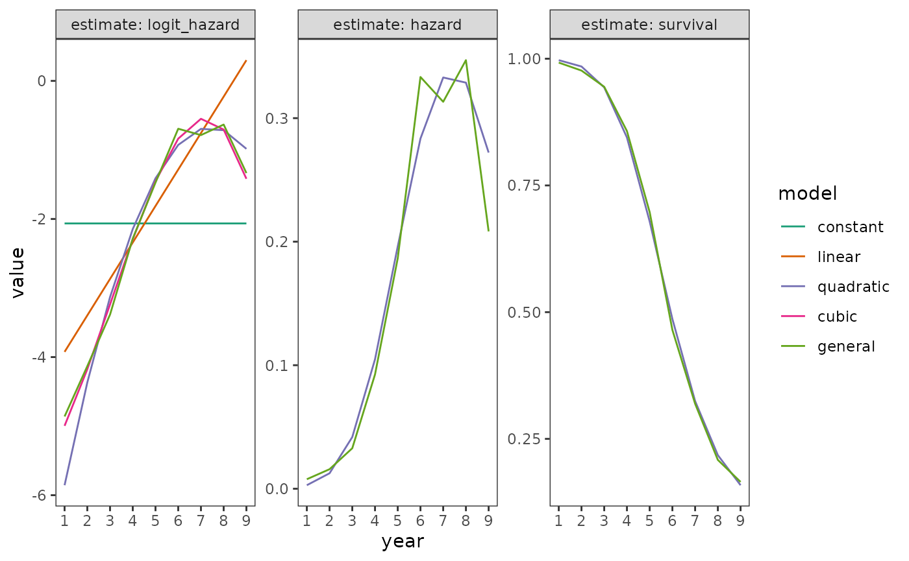
12.2 Using the Complementary Log-Log Link to Specify a Discrete-Time Hazard Model
Figure 12.2:
Figure 12.3, page 423:
first_sex_pp <- first_sex |>
rename(grades = grade) |>
reframe(
grade = 7:max(grades),
event = if_else(grade == grades & censor == 0, 1, 0),
parental_transition,
parental_antisociality,
.by = id
)
# The nested map_() is used here so we can get an ID column for both the
# link function and the subset.
map_dfr(
list(logit = "logit", cloglog = "cloglog"),
\(.x) {
map_dfr(
list(`0` = 0, `1` = 1),
\(.y) {
first_sex_fit <- glm(
event ~ factor(grade),
family = binomial(link = .x),
data = first_sex_pp,
subset = c(parental_transition == .y)
)
augment(first_sex_fit, newdata = tibble(grade = 7:12))
},
.id = "parental_transition"
)
},
.id = "link"
) |>
ggplot(
aes(x = grade, y = .fitted, colour = parental_transition, linetype = link)
) +
geom_line()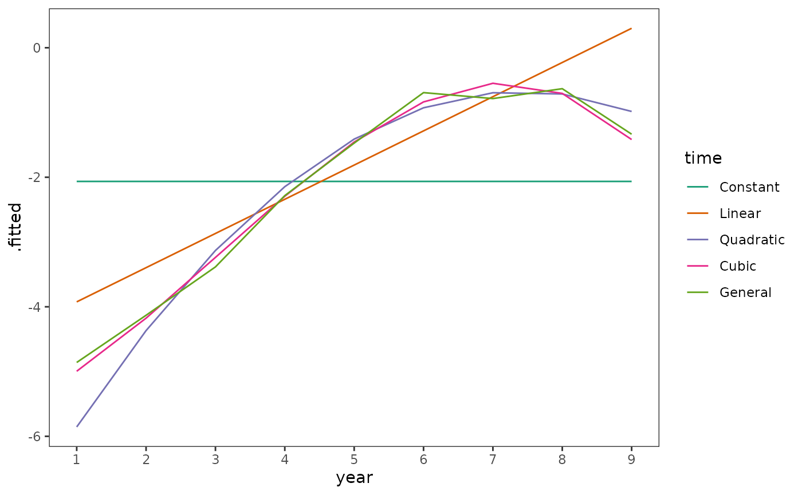
Table 12.3, page 424:
map_dfr(
list(cloglog = "cloglog", logit = "logit"),
\(.x) {
first_sex_fit <- glm(
event ~ -1 + factor(grade) + parental_transition,
family = binomial(link = .x),
data = first_sex_pp
)
first_sex_fit |>
tidy() |>
select(term, estimate) |>
mutate(
base_hazard = case_when(
.x == "logit" & term != "parental_transition" ~
1 / (1 + exp(-estimate)),
.x == "cloglog" & term != "parental_transition" ~
1 - exp(-exp(estimate))
)
)
},
.id = "link"
) |>
pivot_wider(names_from = link, values_from = c(estimate, base_hazard))
#> # A tibble: 7 × 5
#> term estimate_cloglog estimate_logit base_hazard_cloglog base_hazard_logit
#> <chr> <dbl> <dbl> <dbl> <dbl>
#> 1 factor(… -2.97 -2.99 0.0498 0.0477
#> 2 factor(… -3.66 -3.70 0.0254 0.0241
#> 3 factor(… -2.32 -2.28 0.0940 0.0927
#> 4 factor(… -1.90 -1.82 0.139 0.139
#> 5 factor(… -1.76 -1.65 0.158 0.161
#> 6 factor(… -1.34 -1.18 0.230 0.235
#> 7 parenta… 0.785 0.874 NA NA12.3 Time-Varying Predictors
Figure 12.4, page 432:
first_depression_fit <- glm(
depressive_episode ~ poly(I(period - 18), 3, raw = TRUE) + parental_divorce,
family = binomial(link = "logit"),
data = first_depression_1
)
# When a predictor enters the model as part of a matrix of covariates, such as
# with stats::poly(), it is represented in augment() as a matrix column. A simple
# workaround to get the predictor on its original scale as a vector is to pass
# the original data to augment().
first_depression_predictions <- first_depression_fit |>
augment(data = first_depression_1) |>
mutate(hazard = 1 / (1 + exp(-.fitted)))
# Proportions of the risk set at each age who experienced an initial depressive
# episode at that age, as function of their parental divorce status at that age.
first_depression_proportions <- first_depression_1 |>
group_by(period, parental_divorce) |>
summarise(
total = n(),
event = sum(depressive_episode),
proportion = event / total,
proportion = if_else(proportion == 0, NA, proportion),
logit = log(proportion / (1 - proportion))
)
#> `summarise()` has grouped output by 'period'. You can override using the
#> `.groups` argument.
# Top plot
ggplot(mapping = aes(x = period, colour = factor(parental_divorce))) +
geom_line(
aes(y = hazard), data = first_depression_predictions
) +
geom_point(
aes(y = proportion), data = first_depression_proportions
) +
scale_x_continuous(breaks = seq(0, 40, by = 5), limits = c(0, 40)) +
scale_y_continuous(limits = c(0, 0.06))
#> Warning: Removed 14 rows containing missing values or values outside the scale range
#> (`geom_point()`).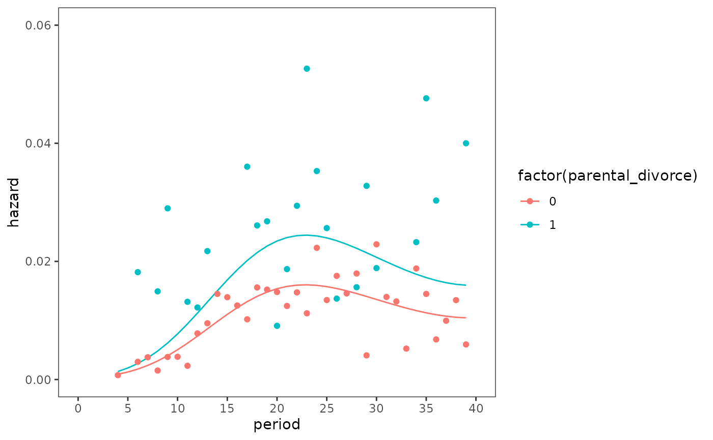
# Bottom plot
ggplot(mapping = aes(x = period, colour = factor(parental_divorce))) +
geom_line(
aes(y = .fitted), data = first_depression_predictions
) +
geom_point(
aes(y = logit), data = first_depression_proportions
) +
scale_x_continuous(breaks = seq(0, 40, by = 5), limits = c(0, 40)) +
scale_y_continuous(breaks = seq(-8, -2, by = 1), limits = c(-8, -2))
#> Warning: Removed 14 rows containing missing values or values outside the scale range
#> (`geom_point()`).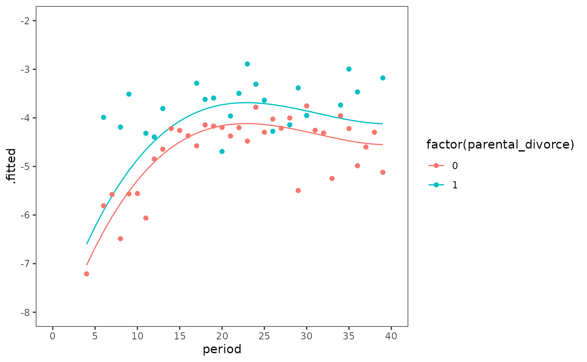
Figure 12.5, page 437:
first_depression_fit_2 <- update(first_depression_fit, . ~ . + female)
first_depression_fit_2 |>
augment(
newdata = expand_grid(
period = 4:39, parental_divorce = c(0, 1), female = c(0, 1)
)
) |>
mutate(
female = factor(female),
parental_divorce = factor(parental_divorce),
hazard = 1 / (1 + exp(-.fitted)),
survival = cumprod(1 - hazard),
.by = c(female, parental_divorce)
) |>
pivot_longer(cols = c(hazard, survival), names_to = "estimate") |>
ggplot(aes(x = period, y = value, linetype = female, colour = parental_divorce)) +
geom_line() +
facet_wrap(vars(estimate), ncol = 1, scales = "free_y") +
scale_x_continuous(breaks = seq(0, 40, by = 5), limits = c(0, 40)) +
ggh4x::facetted_pos_scales(
y = list(
estimate == "hazard" ~ scale_y_continuous(limits = c(0, .04)),
estimate == "survival" ~ scale_y_continuous(limits = c(0, 1))
)
)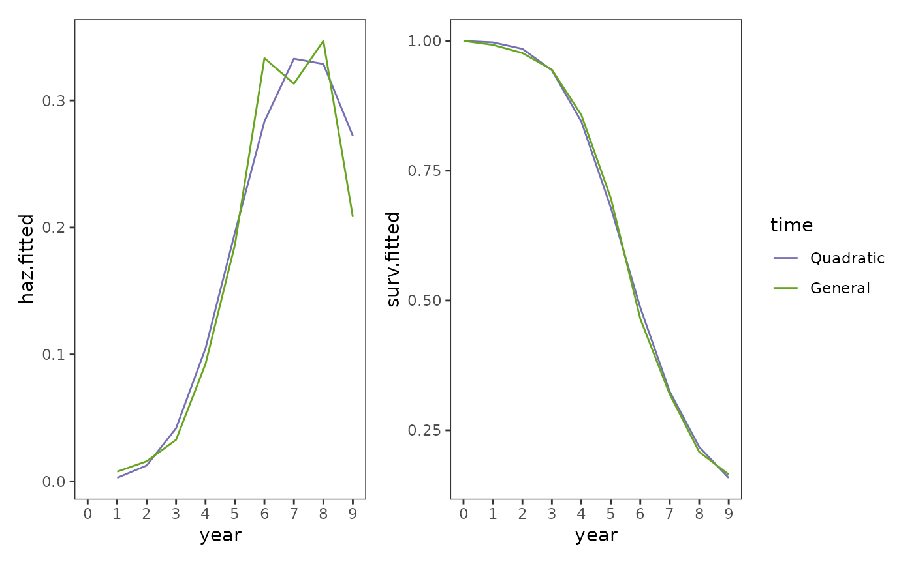
12.4 The Linear Additivity Assumption: Uncovering Violations and Simple Solutions
Figure 12.6, page 445:
# Raw
first_arrest |>
group_by(period, abused, black) |>
summarise(
total = n(),
event = sum(event),
proportion = event / total,
proportion = if_else(proportion == 0, NA, proportion),
logit = log(proportion / (1 - proportion))
) |>
ungroup() |>
mutate(across(c(abused, black), factor)) |>
na.omit() |>
ggplot(aes(x = period, y = logit, colour = abused, group = abused)) +
geom_line() +
scale_x_continuous(breaks = 7:19, limits = c(7, 19)) +
scale_y_continuous(limits = c(-7, -2)) +
facet_wrap(vars(black), labeller = label_both)
#> `summarise()` has grouped output by 'period', 'abused'. You can override using
#> the `.groups` argument.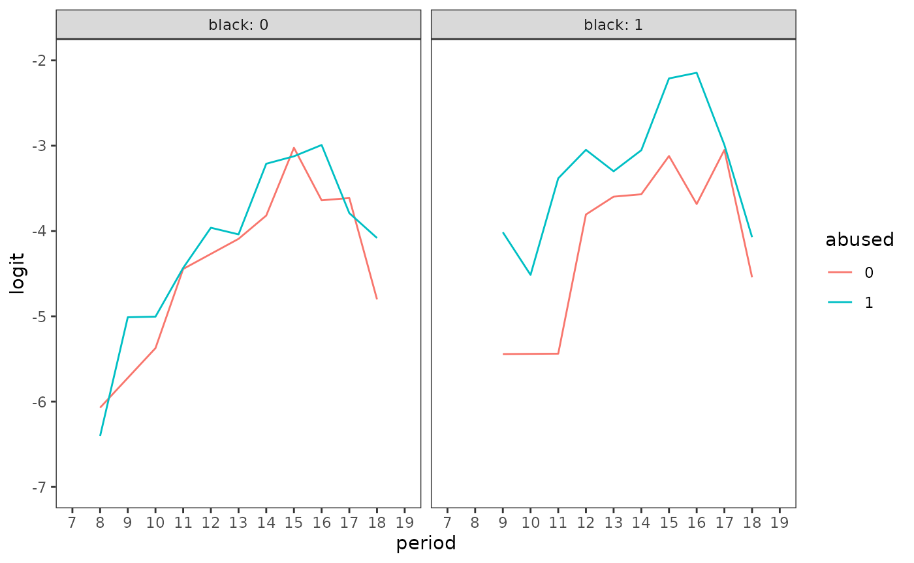
# Model
first_arrest_fit <- glm(
event ~ factor(period) + abused + black + abused:black,
family = binomial(link = "logit"),
data = first_arrest
)
first_arrest_fit |>
augment(
newdata = expand_grid(period = 8:18, abused = c(0, 1), black = c(0, 1))
) |>
ggplot(
aes(
x = period, y = .fitted, colour = factor(abused), linetype = factor(black)
)
) +
geom_line() +
scale_x_continuous(breaks = 7:19, limits = c(7, 19)) +
scale_y_continuous(limits = c(-8, -2))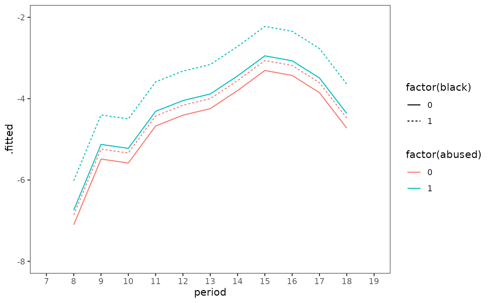
Table 12.4, page 449:
model_A <- update(first_depression_fit_2, . ~ . + siblings)
model_B <- update(
first_depression_fit_2,
. ~ . +
between(siblings, 1, 2) +
between(siblings, 3, 4) +
between(siblings, 5, 6) +
between(siblings, 7, 8) +
between(siblings, 9, Inf)
)
model_C <- update(first_depression_fit_2, . ~ . + bigfamily)
tidy(model_A)
#> # A tibble: 7 × 5
#> term estimate std.error statistic p.value
#> <chr> <dbl> <dbl> <dbl> <dbl>
#> 1 (Intercept) -4.36 0.122 -35.8 2.23e-281
#> 2 poly(I(period - 18), 3, raw = TRUE)1 0.0611 0.0117 5.24 1.64e- 7
#> 3 poly(I(period - 18), 3, raw = TRUE)2 -0.00731 0.00122 -5.97 2.34e- 9
#> 4 poly(I(period - 18), 3, raw = TRUE)3 0.000182 0.0000790 2.30 2.14e- 2
#> 5 parental_divorce 0.373 0.162 2.29 2.18e- 2
#> 6 female 0.559 0.109 5.10 3.34e- 7
#> 7 siblings -0.0814 0.0223 -3.66 2.57e- 4
tidy(model_B)
#> # A tibble: 11 × 5
#> term estimate std.error statistic p.value
#> <chr> <dbl> <dbl> <dbl> <dbl>
#> 1 (Intercept) -4.50 0.207 -21.8 4.22e-105
#> 2 poly(I(period - 18), 3, raw = TRUE)1 0.0615 0.0117 5.27 1.37e- 7
#> 3 poly(I(period - 18), 3, raw = TRUE)2 -0.00729 0.00122 -5.96 2.56e- 9
#> 4 poly(I(period - 18), 3, raw = TRUE)3 0.000181 0.0000790 2.30 2.17e- 2
#> 5 parental_divorce 0.373 0.162 2.29 2.18e- 2
#> 6 female 0.560 0.110 5.11 3.24e- 7
#> 7 between(siblings, 1, 2)TRUE 0.0209 0.198 0.106 9.16e- 1
#> 8 between(siblings, 3, 4)TRUE 0.0108 0.210 0.0512 9.59e- 1
#> 9 between(siblings, 5, 6)TRUE -0.494 0.255 -1.94 5.22e- 2
#> 10 between(siblings, 7, 8)TRUE -0.775 0.344 -2.26 2.41e- 2
#> 11 between(siblings, 9, Inf)TRUE -0.658 0.344 -1.91 5.56e- 2
tidy(model_C)
#> # A tibble: 7 × 5
#> term estimate std.error statistic p.value
#> <chr> <dbl> <dbl> <dbl> <dbl>
#> 1 (Intercept) -4.48 0.109 -41.2 0
#> 2 poly(I(period - 18), 3, raw = TRUE)1 0.0614 0.0117 5.27 1.40e-7
#> 3 poly(I(period - 18), 3, raw = TRUE)2 -0.00729 0.00122 -5.96 2.54e-9
#> 4 poly(I(period - 18), 3, raw = TRUE)3 0.000182 0.0000790 2.30 2.15e-2
#> 5 parental_divorce 0.371 0.162 2.29 2.22e-2
#> 6 female 0.558 0.109 5.10 3.44e-7
#> 7 bigfamily -0.611 0.145 -4.22 2.39e-512.5 The proportionality assumption: Uncovering violations and simple solutions
Figure 12.8, page 458:
# Raw
math_dropout |>
group_by(term, woman) |>
summarise(
total = n(),
event = sum(event),
proportion = event / total,
proportion = if_else(proportion == 0, NA, proportion),
logit = log(proportion / (1 - proportion))
) |>
ungroup() |>
mutate(across(c(woman), factor)) |>
na.omit() |>
ggplot(aes(x = term, y = logit, colour = woman)) +
geom_line()
#> `summarise()` has grouped output by 'term'. You can override using the
#> `.groups` argument.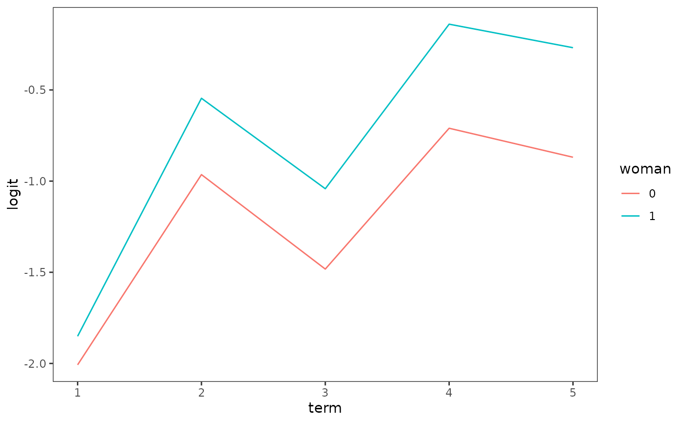
# Models
model_A <- glm(
event ~ -1 + factor(term) + woman,
family = binomial(link = "logit"),
data = math_dropout
)
model_B <- glm(
event ~ -1 + factor(term) + factor(term):woman,
family = binomial(link = "logit"),
data = math_dropout
)
model_C <- update(model_A, . ~ . + woman:I(term - 1))
map_df(
list(model_A = model_A, model_B = model_B, model_C = model_C),
\(.x) {
.x |>
augment(newdata = expand_grid(term = 1:5, woman = c(0, 1))) |>
mutate(hazard = 1 / (1 + exp(-.fitted)))
},
.id = "model"
) |>
ggplot(aes(x = term, y = hazard, colour = factor(woman))) +
geom_line() +
facet_wrap(vars(model))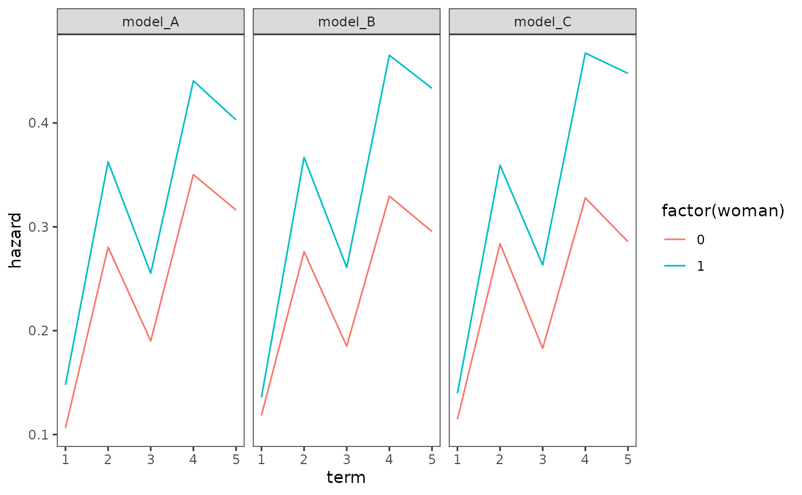
Table 12.5, page 459:
tidy(model_A)
#> # A tibble: 6 × 5
#> term estimate std.error statistic p.value
#> <chr> <dbl> <dbl> <dbl> <dbl>
#> 1 factor(term)1 -2.13 0.0567 -37.6 0
#> 2 factor(term)2 -0.942 0.0479 -19.7 3.14e- 86
#> 3 factor(term)3 -1.45 0.0634 -22.8 1.66e-115
#> 4 factor(term)4 -0.618 0.0757 -8.16 3.42e- 16
#> 5 factor(term)5 -0.772 0.143 -5.40 6.54e- 8
#> 6 woman 0.379 0.0501 7.55 4.33e- 14
tidy(model_B)
#> # A tibble: 10 × 5
#> term estimate std.error statistic p.value
#> <chr> <dbl> <dbl> <dbl> <dbl>
#> 1 factor(term)1 -2.01 0.0715 -28.1 1.40e-173
#> 2 factor(term)2 -0.964 0.0585 -16.5 5.98e- 61
#> 3 factor(term)3 -1.48 0.0847 -17.5 1.45e- 68
#> 4 factor(term)4 -0.710 0.101 -7.05 1.81e- 12
#> 5 factor(term)5 -0.869 0.191 -4.56 5.23e- 6
#> 6 factor(term)1:woman 0.157 0.0978 1.60 1.09e- 1
#> 7 factor(term)2:woman 0.419 0.0792 5.28 1.27e- 7
#> 8 factor(term)3:woman 0.441 0.116 3.81 1.42e- 4
#> 9 factor(term)4:woman 0.571 0.145 3.95 7.86e- 5
#> 10 factor(term)5:woman 0.601 0.286 2.10 3.55e- 2
tidy(model_C)
#> # A tibble: 7 × 5
#> term estimate std.error statistic p.value
#> <chr> <dbl> <dbl> <dbl> <dbl>
#> 1 factor(term)1 -2.05 0.0646 -31.6 7.80e-220
#> 2 factor(term)2 -0.926 0.0482 -19.2 3.96e- 82
#> 3 factor(term)3 -1.50 0.0665 -22.5 3.54e-112
#> 4 factor(term)4 -0.718 0.0861 -8.34 7.34e- 17
#> 5 factor(term)5 -0.917 0.156 -5.89 3.94e- 9
#> 6 woman 0.227 0.0774 2.94 3.31e- 3
#> 7 woman:I(term - 1) 0.120 0.0470 2.55 1.08e- 212.7 Residual Analysis
Table 12.6, page 465:
first_sex_fit <- glm(
event ~ -1 + factor(grade) + parental_transition + parental_antisociality,
family = binomial(link = "logit"),
data = first_sex_pp
)
first_sex_fit |>
augment(data = first_sex_pp, type.residuals = "deviance") |>
select(id:parental_antisociality, .resid) |>
filter(id %in% c(22, 112, 166, 89, 102, 87, 67, 212)) |>
pivot_wider(
id_cols = id,
names_from = grade,
names_prefix = "grade_",
values_from = .resid
)
#> # A tibble: 8 × 7
#> id grade_7 grade_8 grade_9 grade_10 grade_11 grade_12
#> <fct> <dbl> <dbl> <dbl> <dbl> <dbl> <dbl>
#> 1 22 -0.412 -0.294 -0.584 -0.718 -0.775 1.41
#> 2 67 -0.618 -0.448 -0.856 -1.03 -1.10 1.04
#> 3 87 1.82 NA NA NA NA NA
#> 4 89 -0.325 -0.231 -0.464 -0.575 1.86 NA
#> 5 102 -0.491 2.37 NA NA NA NA
#> 6 112 -0.411 -0.294 -0.583 -0.717 -0.774 -0.956
#> 7 166 -0.661 -0.481 -0.911 -1.09 1.19 NA
#> 8 212 -0.286 -0.203 -0.410 -0.509 -0.552 -0.696Figure 12.8, page 467:
first_sex_fit |>
augment(data = first_sex_pp, type.residuals = "deviance") |>
ggplot(aes(x = id, y = .resid)) +
geom_point() +
geom_hline(yintercept = 0)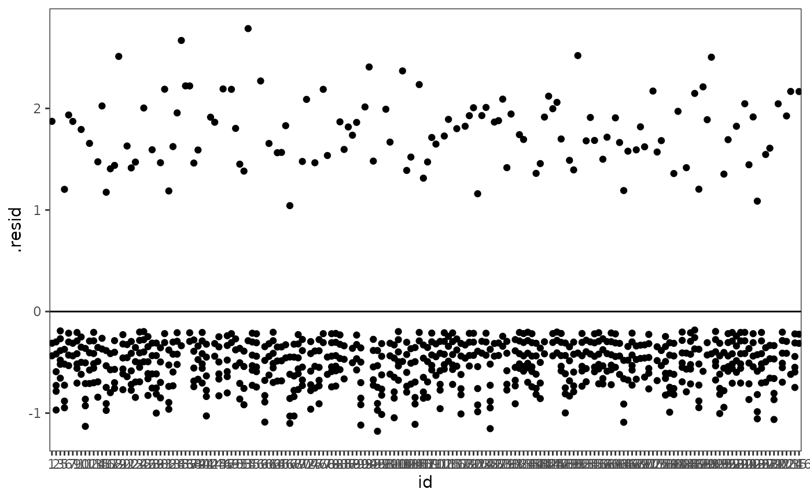
first_sex_fit |>
augment(data = first_sex_pp, type.residuals = "deviance") |>
group_by(id) |>
summarise(ss.deviance = sum(.resid^2)) |>
ggplot(aes(x = id, y = ss.deviance)) +
geom_point()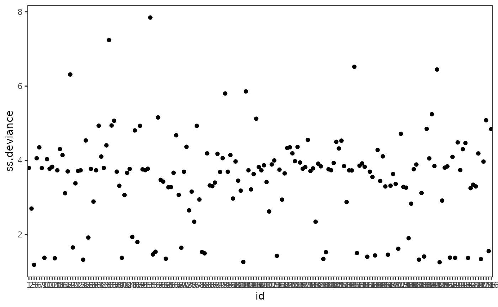